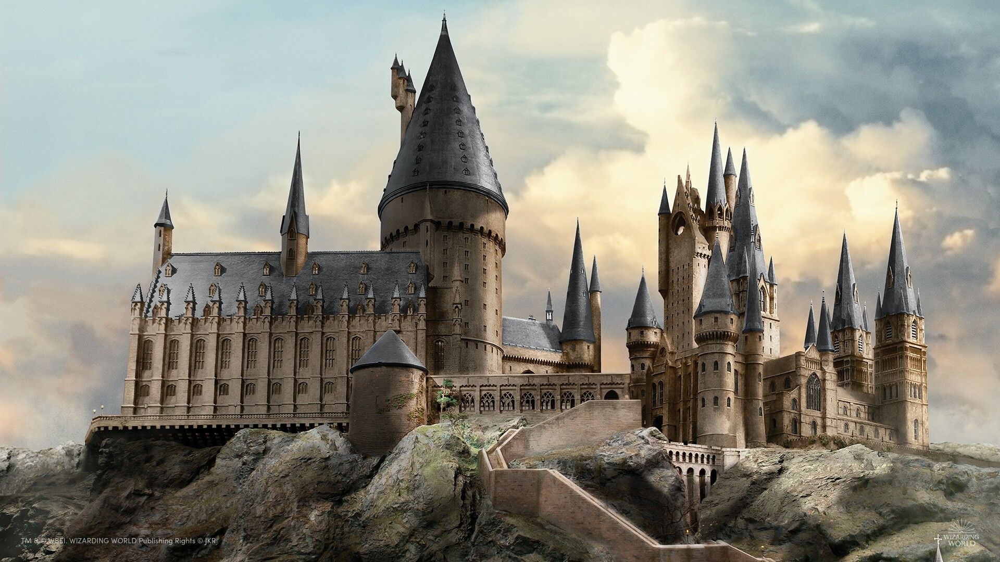
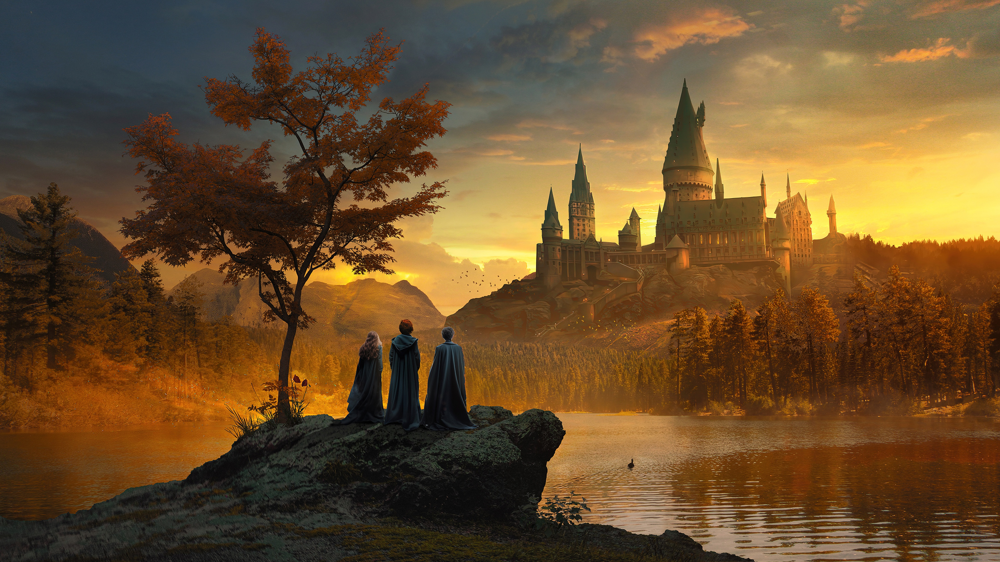

Découvrez le monde des sorciers
Le monde de
Harry Potter
Une histoire d’amitié, de choix et de courage, cachée juste au-delà du quai neuf trois quarts.
Rencontrer les personnagesBienvenue à HarryHub
Entrez dans le monde magique
Retrouvez les repères essentiels de la saga, ses figures marquantes et les huit ouvrages qui composent l’aventure publiée.
Le garçon qui a survécu
Qui est Harry Potter ?
Harry Potter est un garçon orphelin qui découvre, le jour de ses onze ans, qu’il est un sorcier. Élevé par sa tante et son oncle dans le monde ordinaire des Moldus, il ignore tout de son héritage magique jusqu’à son invitation à l’école de sorcellerie Poudlard.
Dans le monde des sorciers, il est déjà célèbre pour avoir survécu, alors qu’il était bébé, à une attaque de Lord Voldemort. L’événement lui a laissé une cicatrice en forme d’éclair et une étrange connexion avec son ennemi.
Un monde caché
Où se déroule l’histoire ?
La série se déroule surtout dans une version secrète et magique de la Grande-Bretagne, parallèle au monde quotidien. Une grande partie de l’histoire prend place à Poudlard, un château-école rejoint depuis le quai neuf trois quarts de la gare de King’s Cross.
L’aventure s’étend aussi au Chemin de Traverse, au ministère de la Magie et à de nombreux lieux où la communauté sorcière tente de résister au retour de Voldemort.

Sept années à Poudlard
Une aventure qui grandit avec ses héros
Au fil des sept romans, Harry passe d’un élève de première année complètement perdu au personnage central de la lutte contre Voldemort. Avec Ron Weasley et Hermione Granger, il découvre des secrets liés à son passé et comprend peu à peu pourquoi le mage noir l’a pris pour cible.
La série mène à une guerre qui met à l’épreuve le courage, la loyauté et l’identité de chacun — tout en gardant l’amitié au cœur de l’histoire.
Parcourir tous les livres